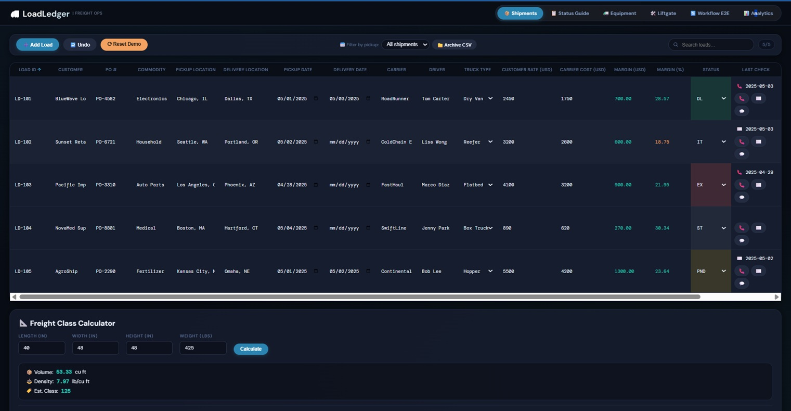
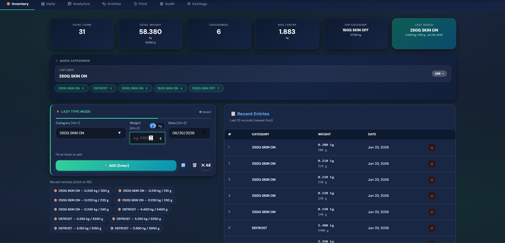

Supply Chain & Logistics
Technologist
13+ years spanning freight operations, IT development, and IT leadership — I don't just move freight, I build the systems that move it
Intensive Profile
Core competencies that drive results
Logistics
End-to-end supply chain coordination with 13+ years of freight operations experience.
Supply Chain
Integrated supply chain management across LTL, FTL, LCL, FCL, air, and sea freight.
Freight
Expert in DAT & Truckstop load boards with proven carrier negotiation skills.
Track & Trace
Real-time shipment visibility with 12x faster exception detection capabilities.
Automation
Built custom logistics systems that reduced manual work by 25%.
How I Work
From load board to delivery — end-to-end freight automation
Load Search
DAT & Truckstop load boards, search filters, rate analysis
Carrier Booking
Rate negotiation, MC# verification, insurance validation
Dispatch
Load planning, scheduling, BOL generation, carrier docs
Track & Trace
Real-time GPS monitoring, proactive exception management
Delivery & Invoice
POD collection, verification, invoice reconciliation
Freight VA Services
Specialized virtual assistant solutions for freight operations
Freight Dispatching
End-to-end load coordination from booking to delivery. Carrier selection, rate negotiation, and on-time pickups across LTL, FTL, and multi-modal shipments.
- Load board management (DAT & Truckstop)
- Carrier onboarding & vetting
- Pickup/delivery scheduling
Track & Trace
Real-time shipment visibility and proactive exception management. Monitor loads throughout transit and keep shippers informed.
- Real-time shipment monitoring
- Proactive delay notifications
- POD collection & verification
Carrier Rate Negotiation
Secure competitive rates that optimize your freight spend. Market data analysis and carrier relationship leverage.
- Market rate analysis
- Contract negotiation
- Freight audit & cost recovery
3PL Coordination
Seamless management of third-party logistics providers. Coordinate between shippers, carriers, and warehouses.
- Vendor management
- Shipment documentation
- Performance tracking
Case Studies
Real results across operations, technology, and leadership
Showing 4 of 4 case studies
Integrated Logistics Technology Ecosystem
Architected and deployed an integrated logistics technology ecosystem supporting 1,000+ SKUs and 500+ daily transportation transactions, leveraging API-driven carrier connectivity, real-time inventory visibility, automated freight auditing, and operational intelligence dashboards.
Enterprise IT Operations & Quality Compliance
Directed enterprise-wide IT operations across 3 business locations, leading an 8-member technical support team responsible for mission-critical infrastructure, service continuity, incident governance, and ISO 9001:2015 quality compliance.
Transportation & Logistics Coordination
Coordinated end-to-end transportation and logistics activities across third-party carrier and supplier networks, overseeing shipment execution, freight documentation management, customer communication workflows, and operational exception handling.
Inventory Governance & Freight Audit Controls
Managed inventory governance, import logistics coordination, transportation administration, freight audit controls, and ERP data integrity processes for 2,500+ SKUs, sustaining high accuracy and recovering transportation overcharges.
Built Tools
Production applications built for freight and logistics

Freight Shipment Tracker
Real-time dispatch operations app with shipment lifecycle management, KPI dashboards, and BOL/POD workflows.
100+ shipments tracked solo
Inventory Management PWA
Offline-capable Progressive Web App for warehouse inventory, deployable on Android tablets with zero server dependency.
99% inventory accuracy across 1,000+ SKUs
Accounts Receivable Dashboard
Web-based accounting dashboard with SOA detail, aging buckets, and wholesale sales summaries from raw Excel exports.
Real-time visibility into receivablesExperience
Logistics Systems Developer
Sikat Araw Trading Corp- Architected and deployed an integrated logistics technology ecosystem supporting 1,000+ SKUs and 500+ daily transportation transactions, leveraging API-driven carrier connectivity, real-time inventory visibility, automated freight auditing, and operational intelligence dashboards to improve fulfillment performance by 30%, accelerate exception detection by 12x, and reduce administrative reporting effort by 25%
IT Team Leader – Dispatch & Operations Support
Ray A. Gapuz Review System- Directed enterprise-wide IT operations across 3 business locations, leading an 8-member technical support team responsible for mission-critical infrastructure, service continuity, incident governance, and ISO 9001:2015 quality compliance, resulting in 99.9% system availability, a 20% improvement in issue resolution performance, and zero external audit non-conformities
Logistics & Technical Support Coordinator
Tri-Asia Electrical Supply- Coordinated end-to-end transportation and logistics activities across third-party carrier and supplier networks, overseeing shipment execution, freight documentation management, customer communication workflows, and operational exception handling, resulting in a 15% reduction in late deliveries while ensuring service reliability and process compliance
Inventory & Systems Analyst
Scan Marine Inc.- Managed inventory governance, import logistics coordination, transportation administration, freight audit controls, and ERP data integrity processes for 2,500+ SKUs, sustaining 99% inventory accuracy, recovering transportation overcharges through systematic carrier reconciliation, and reducing transactional data errors by 40%
Credentials
Education
Bachelor of Science in Information Technology
Aklan State University
2009 – 2011
Contact
Ready to support your freight operations